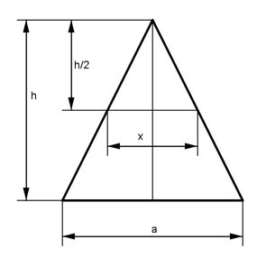

Aufgabe 202 Von einer quadratischen Pyramide wird in halber Höhe die Spitze abgeschnitten. Wie groß ist der Abfall in Prozent?  Strahlensatz: h a ----- = --- |*x h/2 x h * x ------- = a |*h/2 h/2 h * x = a * h/2 |:h x = a/2 a² * h V0 = -------- 3 (a/2)² * h/2 a² * h V0 = -------------- = -------- 3 24 V1 a² * h * 3 1 ---- = -------------- = --- V0 24 * a² * h 8 Verhältnisgleichung: 8 : 100% = 1 : x% 8 * x% = 100% |:8 x = 12,5% = Abfall